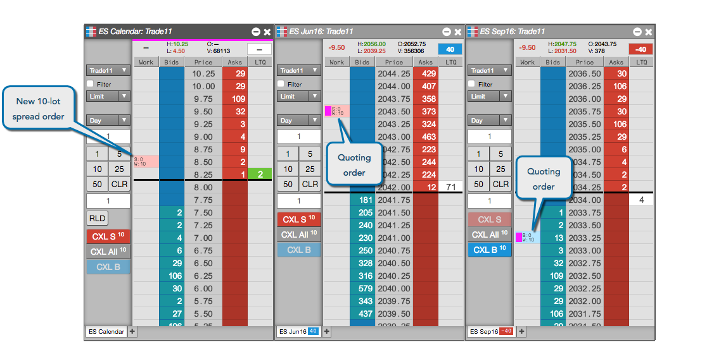
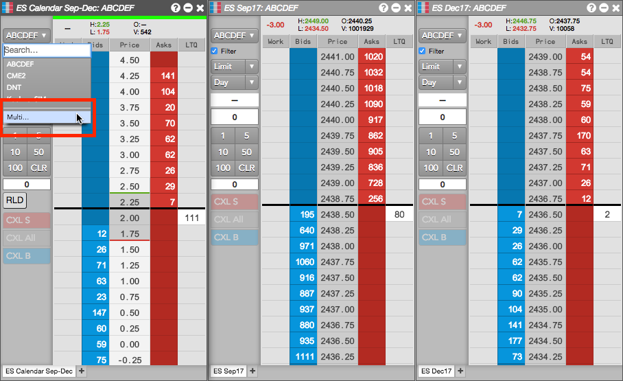
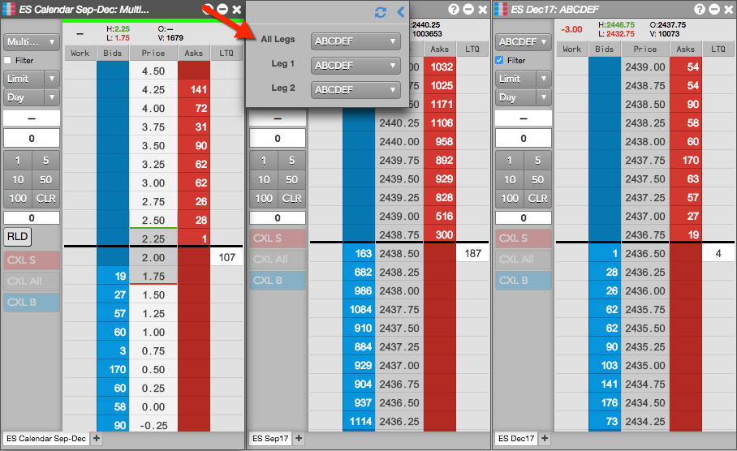
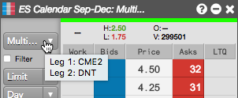
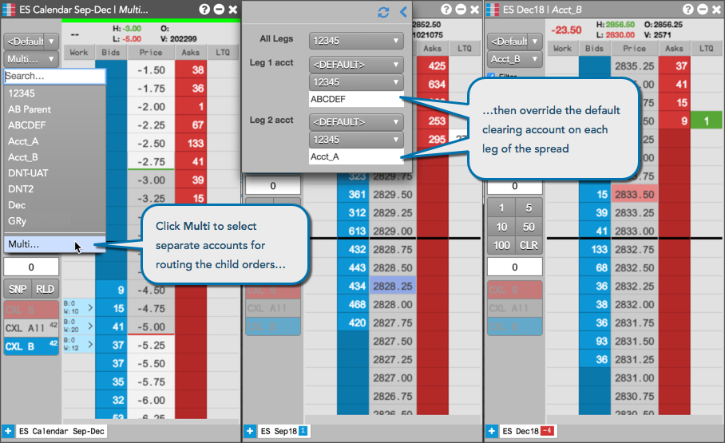

You submit a spread order the same way you submit an order for an exchange-traded instrument. For example, you can submit the spread order in an MD Trader® widget by specifying the order type, TIF and quantity and clicking a price level, as shown. In this example, the spread is configured to submit quoting orders for both legs.

Supported order types and TIFs for Autospreader orders
When submitting Autospreader parent orders, the following order types are supported:
For Autospreader parent orders, the following TIFs are supported:
Note: Both the quote and hedge orders are submitted with the same order type and TIF as the parent spread order.
Autospreader GTC orders
Submitting an Autospreader order as GTC allows you to work the spread order across market sessions. Both the quote and hedge orders are submitted as GTC.
When the underlying markets transition to a closed state, Autospreader does not attempt to change or cancel the quote or hedge orders. When the markets transition back to an open state (including Pre-Open), Autospreader resumes managing the child orders.
When spreading products with different session close times, Autospreader cancels the quote order when a leaning market transitions to a closed state. When the leaning market transitions back to an open state, Autospreader resubmits the GTC quote order.
In the event of Autospreader server maintenance or a server crash, all spread orders are canceled as soon as the quote orders are canceled. If a market is closed when the server restarts, Autospreader will cancel any remaining quote orders as soon as the market transitions to a state that allows cancels (i.e., Pre Open).
Autospreader GTC dependencies
Autospreader requires that the exchange natively supports GTC when the "Active Quoting" option is enabled for that leg. If the exchange does not support GTC, Autospreader rejects the spread order. If "Active Quoting" is disabled for that leg and the exchange does not support GTC, Autospreader submits the hedge orders as
Day (GTD) orders.
Submitting an Autospreader order using multiple accounts
The Autospreader MD Trader spread panel provides you with the ability to select separate accounts for routing the child orders of a parent spread order. For example, you can use separate accounts on different exchanges to submit orders for cross-exchange spreads, or split trading between separate accounts and different brokers.
When you launch a spread, the legs are seeded automatically based on any order default account settings you may have configured. The default accounts may also be different per leg.
To submit an Autospreader order using multiple accounts:
Click the account selector in the MD Trader spread panel and select Multi....

In the flyout panel that appears, click the account selector for each leg and select an account.
Your default account displayed in All Legs is used for routing the leg orders.

When you select a different account for each leg, then Multi... appears in All Legs and each separate account is displayed for Leg 1 and Leg 2, etc.

Configure and submit the spread order in the MD Trader spread pane.
After submitting the order, the flyout panel closes and the spread, quoting, and hedge orders are submitted into the market. The leg orders are routed using the different accounts you selected.
If you hover on the account selector in the MD Trader spread panel, a tooltip appears and displays your account selections for each leg.

Changing the clearing account for each leg of an Autospreader order
{% include change-clearing-account.html %}
Prior to submitting the order, you can change the exchange clearing account "on-the-fly" for each leg of an Autospreader order by clicking Multi... in the account selector in the MD Trader spread panel. In the flyout panel that appears, enter a clearing account value in the Exch Acct edit box for each leg as needed.

{% include change-clearing-account2.html %}
Deleting parent spread orders
Using the Floating Order Book, you can delete a parent spread order and leave the child order(s) working in the market. For more details about how to abandon Autospreader child orders, refer to Deleting parent orders in the Floating Order Book.